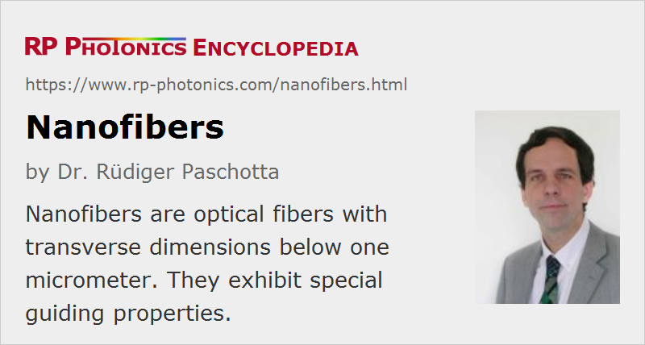

Nanofibers
Definition: optical fibers with transverse dimensions below one micrometer
Alternative terms: photonic nanowires, optical nanowires
More general term: optical fibers
German: Nanofasern
Category: fiber optics and waveguides
How to cite the article; suggest additional literature
Author: Dr. Rüdiger Paschotta
Optical nanofibers, also called photonic nanowires, are optical fibers with diameters in the range from tens to a few hundreds of nanometers. This means that the diameter is often well below the optical wavelength. The alternative term sub-wavelength fibers emphasizes this important aspect. Such nanowires can have peculiar mechanical and optical properties.
Properties
Due to the large refractive index difference between fiber and air, the numerical aperture is very high, and the effective mode area is very small. For precise calculations of the mode properties, full vectorial models are required, as the paraxial approximation is not fulfilled.
Silica nanowires have an exceptional mechanical strength, allowing for bending with radii of a few micrometers. The high numerical aperture keeps the bend losses low even for such tight bending. Tightly coiled fibers can be used for miniature fiber resonators.
Light which is guided in nanofibers can experience strong nonlinearities due to the small effective mode area, and is associated with significant evanescent fields just outside the fiber surface. For fiber diameters below ≈ 0.6 μm (in the case of silica fibers), the mode radius of guided light increases as the fiber diameter is further decreased [5], essentially because the “guiding power” of a thinner fiber becomes weaker. Most of the optical power then propagates in the evanescent field outside the fiber.
Fabrication
A variety of techniques can be used to fabricate optical nanofibers. Particularly low-loss nanofibers [8] are obtained by tapering of larger optical fibers (mostly silica fibers), i.e. by heating and stretching them over a flame (flame brushing). For keeping the losses at a low level, the taper transition should be very smooth (adiabatic tapering). However, even for a constant fiber diameter, the losses become very high when the diameter is too small.
Applications
Although optical nanowires are a fairly new area of research, various possible applications have been identified and in some cases demonstrated. Some examples are:
- Supercontinuum generation in nanowires [7, 11] is possible for low peak powers, as the light propagates in a highly concentrated manner.
- Strongly bent nanowires can form very tiny ring resonators (micro cavities, microloop interferometers) [6], which can act as notch filters [9], and can be used in fundamental research [3].
- The strong evanescent field suggests applications in the area of fiber-optic sensors for chemical or biological species.
- The small dimensions allow probing of fluorescent light from atoms or similar particles [12].
- It is conceivable that lasers with very low threshold pump power could be built by incorporating some laser-active dopants in a small nanofiber resonator.
Questions and Comments from Users
Here you can submit questions and comments. As far as they get accepted by the author, they will appear above this paragraph together with the author’s answer. The author will decide on acceptance based on certain criteria. Essentially, the issue must be of sufficiently broad interest.
Please do not enter personal data here; we would otherwise delete it soon. (See also our privacy declaration.) If you wish to receive personal feedback or consultancy from the author, please contact him e.g. via e-mail.
By submitting the information, you give your consent to the potential publication of your inputs on our website according to our rules. (If you later retract your consent, we will delete those inputs.) As your inputs are first reviewed by the author, they may be published with some delay.
Bibliography
| [1] | R. J. Black et al., “Tapered fibers: an overview”, Proc. SPIE 0839 (1988) |
| [2] | K. J. Vahala, “Optical microcavities”, Nature 424, 8394346 (2003), doi:10.1038/nature01939 |
| [3] | S. M. Spillane et al., “Ideality in a fiber-taper-coupled microresonator system for application to cavity quantum electrodynamics”, Phys. Rev. Lett. 91 (4), 043902 (2003), doi:10.1103/PhysRevLett.91.043902 |
| [4] | L. Tong et al., “Subwavelength-diameter silica wires for low-loss optical wave guiding”, Nature 426, 816 (2003), doi:10.1038/nature02193 |
| [5] | L. Tong et al., “Single-mode guiding properties of subwavelength-diameter silica and silicon wire waveguides”, Opt. Express 12 (6), 1025 (2004), doi:10.1364/OPEX.12.001025 |
| [6] | M. Sumetsky et al., “Fabrication and study of bent and coiled free silica nanowires: Self-coupling microloop optical interferometer”, Opt. Express 12 (15), 3521 (2004), doi:10.1364/OPEX.12.003521 |
| [7] | S. G. Leon-Saval et al., “Supercontinuum generation in submicron fibre waveguides”, Opt. Express 12 (13), 2864 (2004), doi:10.1364/OPEX.12.002864 |
| [8] | G. Brambilla et al., “Ultra-low-loss optical fiber nanotapers”, Opt. Express 12 (10), 2258 (2004), doi:10.1364/OPEX.12.002258 |
| [9] | M. Sumetsky et al., “The microfiber loop resonator: theory, experiment, and application”, IEEE J. Lightwave Technol. 24 (1), 242 (2006), doi:10.1109/JLT.2005.861127 |
| [10] | M. Sumetsky, “How thin can a microfiber be and still guide light?”, Opt. Lett. 31 (7), 870 (2006), doi:10.1364/OL.31.000870 |
| [11] | R. R. Gattass et al., “Supercontinuum generation in submicrometer diameter silica fibers”, Opt. Express 14 (20), 9408 (2006), doi:10.1364/OE.14.009408 |
| [12] | K. P. Nayak et al., “Optical nanofiber as an efficient tool for manipulating and probing atomic fluorescence”, Opt. Express 15 (9), 5431 (2007), doi:10.1364/OE.15.005431 |
| [13] | M. A. Foster et al., “Nonlinear optics in photonic nanowires”, Opt. Express 16 (2), 1300 (2008), doi:10.1364/OE.16.001300 |
| [14] | D. Yeom et al., “Low-threshold supercontinuum generation in highly nonlinear chalcogenide nanowires”, Opt. Lett. 33 (7), 660 (2008), doi:10.1364/OL.33.000660 |
| [15] | R. Yan et al., “Nanowire photonics”, Nature Photon. 3 (10), 569 (2009), doi:10.1038/nphoton.2009.184 |
| [16] | G. Brambilla et al., “Optical fiber nanowires and microwires: fabrication and applications”, Advances in Optics and Photonics 1 (1), 107 (2009), doi:10.1364/AOP.1.000107 |
| [17] | J. J. Morrissey et al., “Spectroscopy, manipulation and trapping of neutral atoms, molecules, and other particles using optical nanofibers: a review”, Sensors 13 (8), 10449 (2013), doi:10.1117/12.942540 |
| [18] | H. Sun et al., “Giant optical gain in a single-crystal erbium chloride silicate nanowire”, Nature Photonics 11, 589 (2017), doi:10.1038/nphoton.2017.115 |
See also: fibers, tapered fibers, waveguides, cavities, wavelength
and other articles in the category fiber optics and waveguides
|  |
If you like this page, please share the link with your friends and colleagues, e.g. via social media:
These sharing buttons are implemented in a privacy-friendly way!